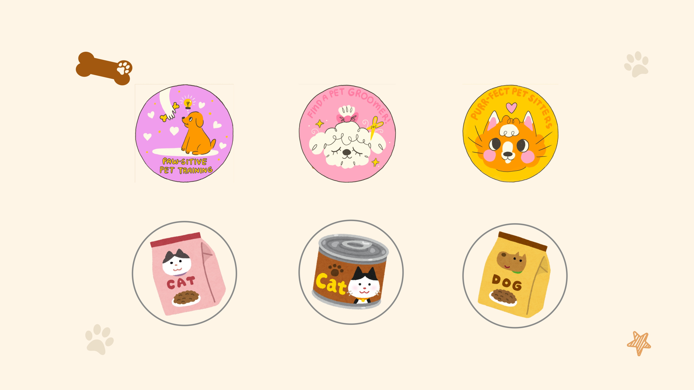

Chiens et chats : prévenir pour protéger
1. Besoins de base au quotidien
La santé d’un animal ne commence pas lorsqu’il tombe malade, mais dans la manière dont il vit chaque jour. Eau fraîche disponible en permanence, alimentation équilibrée, espace de repos au calme et possibilité de bouger sont des éléments essentiels pour limiter de nombreux troubles.
Chez le chien comme chez le chat, un rythme régulier des repas et du sommeil contribue à stabiliser le fonctionnement digestif et à réduire le stress. Observer l’appétit, la consommation d’eau, la qualité des selles ou du pelage offre déjà de précieuses informations sur l’état général de l’animal. Comme le rappellent de nombreux guides de prévention, « mieux vaut intervenir tôt que trop tard ».

2. Prévention simple au jour le jour
La prévention passe par des gestes répétitifs mais fondamentaux : brosser le pelage, vérifier les oreilles, couper les griffes lorsque c’est nécessaire, proposer des jeux adaptés pour éviter l’ennui et surveiller le poids. Ces routines permettent de repérer très tôt un changement : démangeaisons, gêne à la marche, nœuds dans le poil, griffes trop longues, etc.
L’enrichissement du milieu – tapis de fouille, jouets à mâcher, arbres à chat, cachettes – aide à prévenir certains comportements indésirables. Un animal stimulé, mais pas sur-sollicité, est souvent plus apaisé et moins destructeur.
3. Sécurité à la maison et à l’extérieur
De nombreux accidents du quotidien sont liés à l’environnement : plantes toxiques, produits ménagers, petits objets avalés, fenêtres ouvertes, fortes chaleurs sur un balcon ou dans une voiture. Anticiper ces situations et adapter son logement est une forme de prévention à part entière.
À l’extérieur, la surveillance reste essentielle : choisir un harnais ou un collier adapté, ajuster la durée des promenades à la météo, éviter les sols brûlants en été et bien sécher l’animal après une sortie sous la pluie ou dans la neige. Une simple vérification des coussinets ou du pelage après la balade réduit déjà de nombreux risques.
4. Bien-être émotionnel et routine
La santé ne se résume pas au corps : la dimension émotionnelle est essentielle. Un chien ou un chat qui ne comprend pas ce qu’on attend de lui, qui reste seul trop longtemps ou qui vit dans un environnement bruyant peut développer des signaux de stress : agitation, léchages excessifs, miaulements répétés, malpropreté, etc.
Mettre en place une routine prévisible (heures de repas, temps de jeu, moments de calme) rassure l’animal. Des interactions positives, basées sur la récompense et la communication bienveillante, renforcent la confiance. Pour certains animaux sensibles, organiser une zone de retrait – panier dans une pièce calme, perchoir en hauteur – peut faire toute la différence.